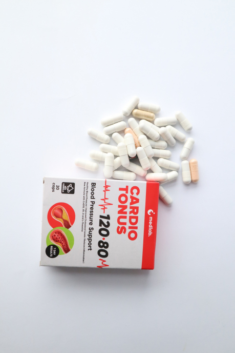
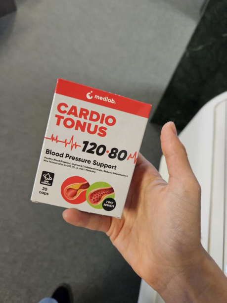
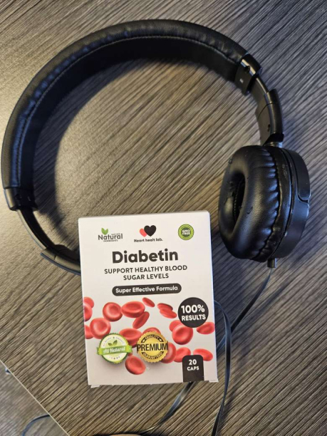

120/80 ay imposibleng pangarap para sa iyo?
Tunay ang pangarap na ito!
Raymund Paul Baello
Nakipag-usap kami kay Dr. Raymund Paul Baello, na isang bantog na Filipino cardiologist, propesor at klinikal na pharmacologist na may karanasan sa trabaho ng maraming taon. Nagbahagi siya ng lihim na pamamaraan upang gawing normal ang presyon ng dugo.
- Doktor, paano nakakaapekto ang hypertension sa kalidad ng buhay ng isang tao, gaano kalubha ang sakit na ito?
Sa pagtanda maraming mga problema sa kalusugan ang lilitaw, isa na rito ay hypertension.
Ang hypertension ay isang patolohiya na sinamahan ng isang paulit-ulit na pagtaas ng presyon ng dugo na higit sa 130/90. Kinakailangan nito ang mga pagbabago sa paggana ng panloob na mga organo, pati na rin ang paglabag sa kagalingan ng tao.

Kapag lumitaw ang sakit na ito, ang kundisyon ng isang tao ay sumasailalim sa mga sumusunod na pagbabago:
- talamak na pagkapagod;
- paghina ng katalinuhan at memorya;
- sobrang sakit ng ulo;
- lumala ang paningin, humahantong ito sa pagkabulag sa mga malubhang kaso;
- lumalala ang pandinig;
- paglabag sa koordinasyon ng paggalaw;
- mga pagbabago sa lakad;
- kahinaan ng braso o binti;
- pangkalahatang pagbawas ng pagiging sensitibo;
- sakit sa kasukasuan at kalamnan;
- hindi pagkakatulog;
- agpalya sa pagtayo;
- tataas ang dinadala ng mga kidney, na maaaring humantong sa paglabag ng pangunahing pag-andar ng pag-ihi.
Ang lahat ng mga sintomas na ito ay makabuluhang nagpapalala sa kalidad ng buhay, mas mahirap para sa isang lalaki na makipaglaro sa kanyang mga anak/apo, magsagawa ng pang-araw-araw na gawain, at mas mahirap para sa isang babae na mapanatili ang buhay sa bahay, ito ay dahil sa patuloy na paghinga ng hininga habang kahit hindi gaanong mahalaga mga pisikal na aktibidad.

- Wala bang ipinapakitang mga sintomas ang hypertension?
Ito ang dahilan kung bakit napakasinsala ng sakit! Para sa maraming mga pasyente, ang arterial hypertension ay maaaring magpakita ng walang mga sintomas sa loob ng mahabang panahon at ang kalusugan ng pasyente ay maaaring manatiling medyo mabuti. Ang kanilang katawan ay simpleng naga-adjust sa mataas na presyon ng dugo. Ang mataas na presyon ng dugo, hindi alintana kung nararamdaman ito ng isang tao o hindi, ay may mapanganib na epekto sa mga daluyan ng dugo at mga organo na pinapakain nila: utak, puso, mga bato. Dahil sa isang pangmatagalang arterial hypertension (kahit na walang mga reklamo) maaaring humantong sa mga sakuna ng vaskular ang mga pagbabagong ito:
- stroke;
- sakit sa lugar ng dibdib, tinatawag ding angina;
- atake sa puso;
- pagpalya sa puso at kidney;
- arrhythmia sa puso, na maaaring humantong sa biglaang pagkamatay.
Laging may isang progresibong huwaran ang hypertension.
Ang sumusunod ay ang istatistika ng mga pagkamatay mula sa mga sakit sa puso sa Pilipinas:

- 13,2 % coronary na sakit sa puso;
- 12 % pagpalya ng puso at kidney;
- 11,9 % atake sa puso;
- 11 % stroke;
- 4 % hypertension;
- 2 % arrhythmia;
- 45,9% ibang mga karamdaman;
- Mayroon ba ang pangunahing dahilan para sa hypertension?
Ang pangunahing dahilan ay isang pagbaba ng lumen ng maliliit na daluyan, na pumipigil sa daloy ng dugo. Ang presyon sa mga dingding ng mga daluyan ng dugo ay tumataas, mayroong pagtaas ng presyon ng dugo, dahil ang kalamnan ng puso ay nangangailangan ng higit na pagsisikap na itulak ang dugo sa pamamagitan ng daluyan ng dugo.
Ito ay dahil sa kontaminasyon ng mga daluyan ng dugo.
Ang malinis na sisidlan ay ang batayan ng mabuting kalusugan at kagalingan.
Ang hypertension ay nagiging mas bata, ang edad ng mga pasyente na may hypertension ay 18 at mas matanda, medyo madaling makilala
ang
sakit,
dapat magsimulang maglinis ang isang tao kapag lumitaw ang mga sumusunod na sintomas:
- pamumula ng mukha;
- pagpapawis;
- namamaga ang mga kamay;
- pamamaga sa umaga;
- pamimintog ng mukha;
- paghina ng memorya;
- ingay sa tainga;
- nakakakita ng mga spot at malabong paningin;
- pangkalahatang kahinaan;
- karamdaman sa pagtulog;
- pagkahilo;
- mabigat na ulo;
- mabilis na tibok.
Kung ang isang pasyente ay hindi nagsisimulang linisin ang kanilang mga daluyan ng dugo, umuusbong at nagiging permanente ang mga sintomas.
Ang isang pasyente ay dapat na patuloy na bisitahin ang mga parmasya at bumili ng isang bungkos ng iba't ibang mga gamot. Kaaya-aya ba? Siyempre hindi!
Ito ang hitsura ng isang baradong sisidlan
- Doctor, ano ang inirerekumenda mo para sa paglilinis ng mga sisidlan?
Kamakailan lamang, ang aking mga kasamahan mula sa sentro ng puso ng Pilipinas ay nakabuo ng isang mabisang lunas sa paglilinis ng mga daluyan ng dugo.
Ang Cardio Tonus ay isang produkto na binuo ng nangungunang mga eksperto sa larangan ng kardyolohiya. Sa loob ng higit sa tatlong taon, nagkakaroon sila ng isang pormula na magbibigay ng pinakamahusay na mga resulta sa paggamot ng hypertension at mga kahihinatnan nito.
Naglalaman lamang ang gamot ng lubos na purong mga katas ng mga halaman na nakapagpapagaling na malinis na mabuti ang mga daluyan ng dugo, na ginagawang ligtas at kaibigan-ng-kapaligiran na produkto, at mayroon din itong nutrisyunal na halaga para sa buong katawan.
Ang Cardio Tonus ay pangunahing ginawa sa Pilipinas at pinopondohan ng pamahalaang pederal.
Sa personal, inirerekumenda ko ang produktong ito, kamakailan lamang, nakumpleto ko ang kurso at masayang-masaya ako sa resulta, ang aking buhay ay malinaw, at iyon ang dahilan kung bakit ibinabahagi ko ang bigay ng diyos na ito sa aking mga pasyente na lumalapit sa akin na may mga kasabay na sakit.
Matapos mong simulan ang pag-inom ng lunas, mapapansin mo ang mga pagbabago sa iyong pangkalahatang kalusugan para sa mas mahusay, ang resulta ay hindi magtatagal, at pagkatapos ng isa o dalawang linggo, tataas ang patente ng mga daluyan ng dugo at sa wakas ay madarama mo rin tulad ng isang malusog na tao.
Nais kong ipakilala sa iyo ang mga istatistika ng paglilinis ng daluyan ng dugo sa tulong ng Cardio Tonus, na
nakuha
bilang isang resulta ng mga klinikal na pag-aaral.
Ang pag-aaral ay nagsasangkot ng 3000 mga pasyente, lahat sa kanila ay kumukuha ng 2 linggo na kurso ng Cardio
Tonus.
Narito kung ano ang ipinakita ang mga resulta ng pag-aaral:
- Ang presyon ng dugo ay bumalik sa normal sa unang linggo ng pagkuha ng lunas - 99% ng mga kalahok;
- Bumalik sa normal ang tibok ng puso - 97% ng mga kalahok;
- 98% ng mga kalahok ay ganap na nalinis ang kanilang mga daluyan ng dugo mula sa kolesterol sa pagtatapos ng pag-aaral;
- Nawala ang mga sobrang sakit ng ulo - 99% ng mga kalahok;
- Napabuti ang paningin at pandinig - 100% ng mga kalahok;
- Pinagbuti ang pangkalahatang kagalingan - 100% ng mga kalahok;
- Ang pagiging epektibo ng paggamot ng mga malalang sakit ay tumaas - 98% ng mga kalahok;
- Walang mga epekto mula sa pag-inom ng lunas - 100% ng mga kalahok.
- Magkano ang halaga ng Cardio Tonus at saan ito mabibili ng mga tao?
Sa ngayon, ang presyo ng lunas ay napaka-abot-kaya, maaari mo itong orderin sa isang 50% na diskwento, ngunit dapat kang magmadali, dahil sa pagkakaalam ko, pansamantala ang promo at magiging wasto hanggang sa petsa (tinukoy dito ang isang petsa na may mga limitasyon)
Matuto nang higit pa tungkol sa kung paano makakuha ng Cardio Tonus na hinahatid saan man sa bansa:
- Punan ang form sa website.
- Pagkatapos nito, tatawagan ka ng manager at linilinawan ang address ng paghahatid.
At tandaan, upang mapanatiling malinis ang iyong mga daluyan ng dugo, inirerekumenda na kumuha ng kurso ng lunas isang beses sa isang taon, dahil ang malinis na mga daluyan ng dugo ay susi sa mabuting kalusugan at kagalingan, lalo na para sa mga matatanda.Nais kong bumati sa iyo at sa iyong pamilya ng mabuting kalusugan.
Quedan 80 envases
Hindi ko inirerekumenda ang pag-order ng lunas sa iba pang mga website upang maiwasan ang mga manloloko.
- Dr. Cabral, salamat sa iyong oras at isang nakakainteres at kapaki-pakinabang na panayam.
Mga pagsusuri:
Paula
Magandang hapon. 57 ako. Nalaman ko tungkol sa Cardio Tonus nang hindi sinasadya online noong Abril 2020. Gusto ko talagang subukan
ito! Agad akong umorder ng 5 mga pakete. Sabay naming iniinom ito ng asawa ko. Masaya kami sa mga resulta, mayroon kaming isang
silakbo ng lakas, ang aming mga paa ay hindi gaanong pagod (nagtatrabaho kami sa aming mga paa buong araw), ang spider angiomas
ay
namumutla, nawala ang mga sakit sa dibdib at nawala ang igsi ng hininga, tumigil ang pag-inom ng aking asawa ng mga gamot sa
presyon
ng dugo dahil sa Cardio Tonus. Maraming tao sa paligid ko ang kumukuha na ng Cardio Tonus na sumusunod sa aming rekomendasyon, at
lahat ay
masaya rin. Maraming salamat.


Alvin
Ang aking ina ay kumukuha ng Cardio Tonus sa loob ng 2 linggo, nakikita ko na siya ay naging mas aktibo, nasisiyahan siya sa
paglalaro
kasama ng kanyang mga apo at nililibre kami sa mga pastelerya, ang buong pamilya ay lubos na nasisiyahan tungkol sa kanyang
pagpapabuti sa kalusugan, salamat sa mga tagalikha ng suplemento na ito.

Abraham
Tuwang-tuwa ako sa resulta, ang aking buhay ay nagbago para sa mas mahusay, ako ay hindi gaanong pagod, mayroon akong sapat na enerhiya para sa aking buhay pagtatalik, at ang aking asawa ay masaya tungkol dito.
Lilimay
Takot na takot akong mag-order ng Cardio Tonus, hindi ako naniniwala na maaari itong gumana. Hanggang sa ipayo ito ng doktor sa
akin.
Kinikilig ako, mag-oorder pa ako!


Terio
Dati mayroon akong mataas na presyon ng dugo, nagkaroon ako ng isang micro-stroke at nagsimulang maghanap ng isang lunas na maaaring gawing normal ang aking presyon ng dugo, nakatagpo ako ng Cardio Tonus, inorder ko ito, naihatid sa aking pintuan, wala na akong mga problema sa kalusugan, araw-araw ang gawain ay mas madali para sa akin ngayon!
Willy
Napakainteresado, umorder ako ng 2 mga pakete!!
Margie
Ang aking asawa at ako ay kumukuha ng Cardio Tonus sa loob ng isang buwan, at kung minsan ay nakakalimutan naming inumin ito
araw-araw.
Gumawa kami ng pagsusuri sa mga sisidlan 2 buwan na ang nakakaraan sa unang pagkakataon, ipinakita sa pagsusuri na ang aming mga
sisidlan ay puno ng kolesterol, kamakailan lamang ay nagkaroon ulit kami ng pagsusuri, malinis ang aming mga sisidlan.


Francis
Nagdurusa ako mula sa kapansanan sa memorya ng maraming taon, naisip ko na ito ang katapusan, ngunit lumalabas na mayroong isang solusyon, ngayon pakiramdam ko bata pa ako!
Sophie
Napansin ko ang mga pagpapabuti! Wala nang balingoyngoy, walang ingay sa tainga, at hindi ako nakakaramdam ng pagod sa araw, at bukod maliban dito, mas madaling magising sa umaga. Inirerekomenda ko!